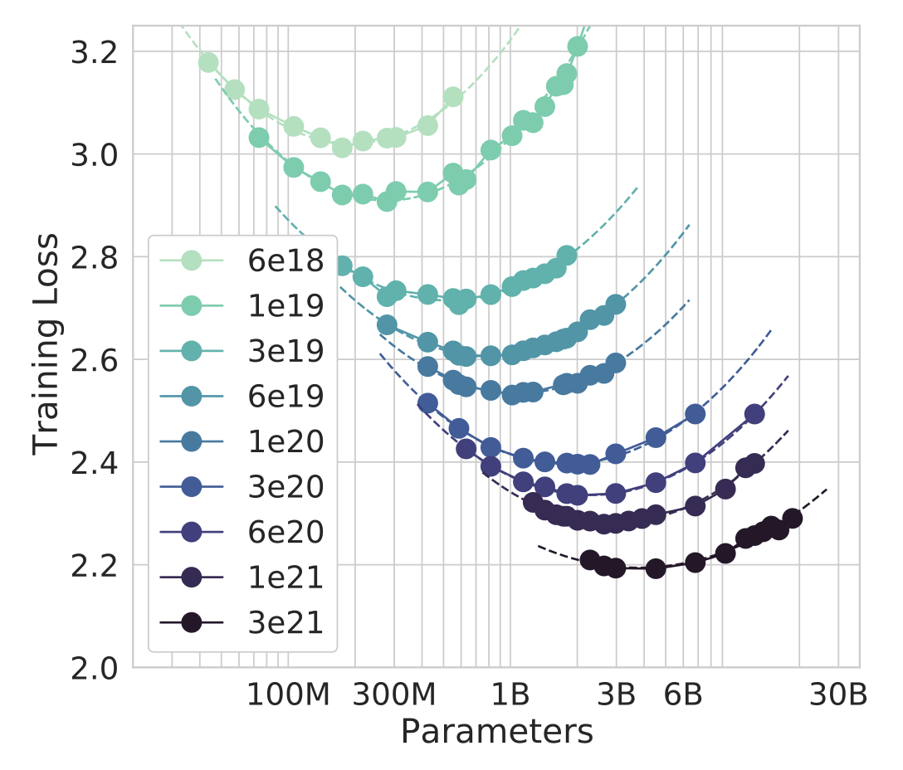
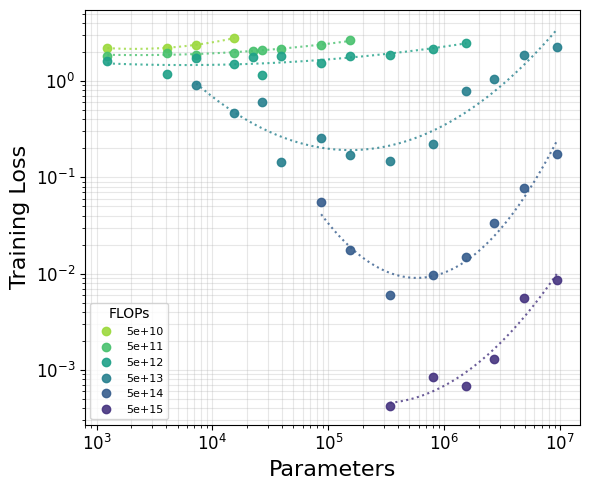
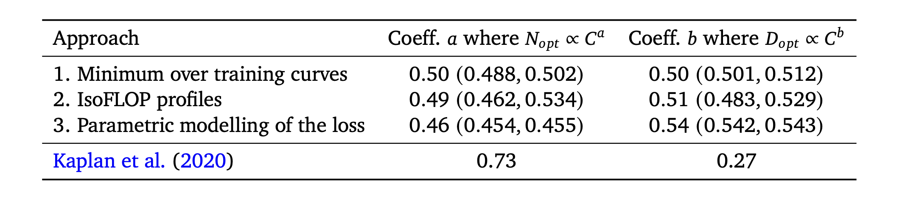
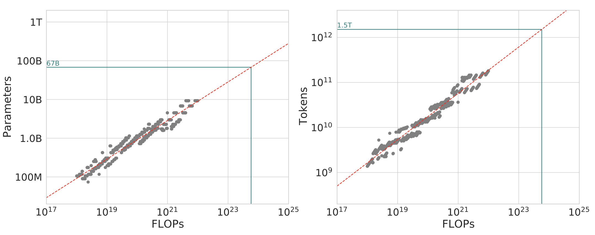
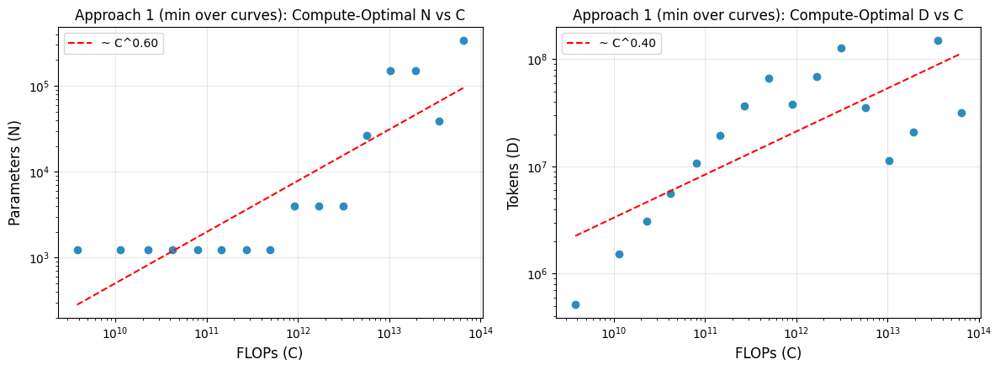
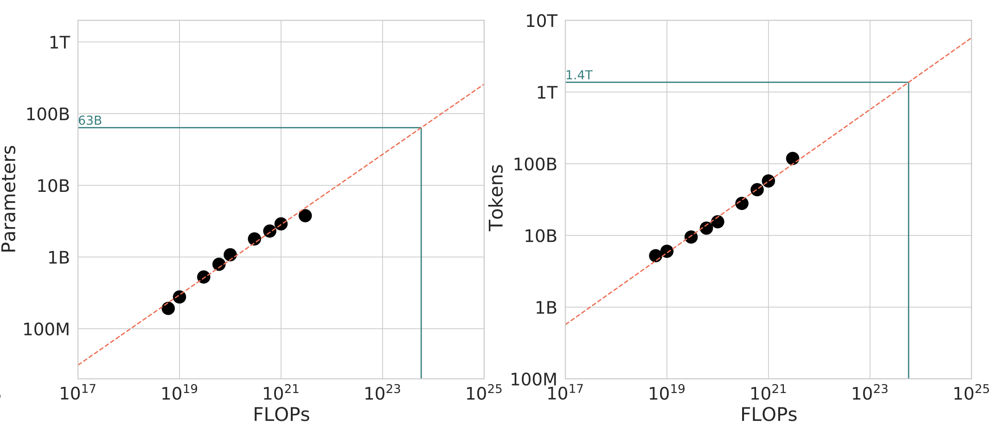
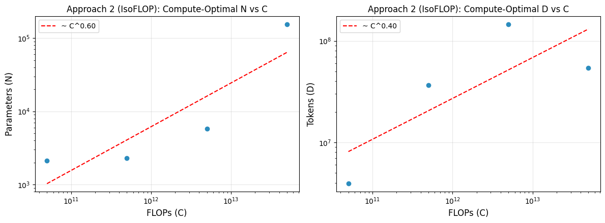

TL;DR: I derive Chinchilla-style transformer scaling laws in a minimal setup using small models (<10M parameters) and synthetic addition data, all trained in a single (free!) NVIDIA T4 Google Colab notebook.
The exponential growth in AI investment, infrastructure, and capability seen over the past half-decade can be extrapolated from the language model scaling laws famously published in Kaplan et al 2020 and refined in Hoffmann et al 2022. These scaling laws simply describe the empirical relationship between the amount of compute used to train a language model and its performance. The Kaplan paper found that model size (parameters), dataset size, and compute (FLOPs) were the key variables impacting performance as measured by training loss. From their findings, the authors derived scaling laws that reliably predicted a model’s loss as a function of its parameter count and the total FLOPs of training compute. These relationships were power laws, meaning a constant-factor reduction in loss required a much larger increase in compute/data/parameters. This work found that particular nuances of a transformer’s architecture (width, depth, attention heads, etc) were insignificant compared to the necessity of scale – a bitter lesson. To read more about the history of scaling laws, check out Lilian Weng’s excellent blogpost.
Subsequent work from Google Deepmind (Hoffmann et al 2022) refined the exact formulation of the scaling relationship, introducing the so-called “Chinchilla” scaling laws. They found that due to some methodological issues (explained here) the Kaplan scaling laws overestimated the importance of model size. Instead, the Chinchilla authors determined that the most compute-optimal models should have fewer parameters and more data than previously thought, and that data and parameters should be scaled roughly evenly as models get larger. These Chinchilla scaling laws proved highly influential, although mixture-of-experts models and inference economics have since changed the optimal way to train LLMs.
While replicating full scaling law experiments up to the frontier is prohibitively expensive, you can demonstrate scaling laws at home, with some limitations, by simplifying the data regime and scaling down the experiments as done here. In particular, I am roughly following a suggested exercise from Google Deepmind pretraining lead Vlad Feinberg's blog post:
“Code a ∼10M transformer using only jax, flax, optax in free colab using tpu. Hard code it to accept digits 0-9, space, +, =. Generate a dataset of simple up-to-3-digit numbers, have it learn addition. Should train quickly on T4 GPU (pad examples to fixed length). Derive Chinchilla laws for this; see how they differ for dense vs MoE architectures.”
In this minimal experiment, I train models on a simple synthetic dataset of integer addition examples, for example “142+17=159”. The loss is computed only on the answer tokens. While Vlad suggests generating examples of 3 digit addition, I found that this was extremely trivial for even tiny models to learn, and the task would quickly saturate. Instead, I sum randomly generated numbers of up to 6 digits for a slightly more challenging data distribution. Conveniently, arithmetic can be represented with only 10 tokens for digits plus a few operator and padding tokens. Because the vocabulary is so small, this greatly reduces embedding parameters and avoids the debate about whether embedding parameters should count in scaling.
There is a key distinction between this synthetic addition task and the natural language modeling done in Kaplan et al 2020 and Hoffmann et al 2022. Addition is a perfectly solvable task, while natural language modeling is not. Given the prefix “X+Y=”, the solution Z is uniquely deterministic; however, given a string like “Mom’s Chili Recipe: ” there are many valid subsequent sequences. We will see if the difference in data distribution, among other differences, impacts the observed scaling laws in my experiments.
I use GPT-style transformers of varying sizes for the scaling experiments. Specifically, they are pre-norm decoder-only dense transformers with GeLU activations. The smaller models have a single attention head per layer, while larger models have multiple 32-dimensional attention heads. The hidden dimension is always set at 4 times the model (bottleneck) dimension. Following Vlad’s suggestion, the models are implemented in JAX, using the Flax API with Optax for the loss function and optimizer.
My experiments approximately follow the Chinchilla methodology. I use the AdamW optimizer with cosine decay that bottoms out the learning rate to 10% of its maximum by the final training step. This avoids the issue in the Kaplan experiments, which used the same fixed learning rate schedule for all models regardless of step count. Peak learning rate is set at 1e-3. The batch size is set to 512 examples, and each example is padded to a fixed token length. Rather than sampling from a fixed corpus, each training step generates a fresh batch of random addition problems. For longer sequences, the model rarely sees the same example twice, and the reported training loss is an unbiased estimate of loss on the underlying data distribution.
I scale the parameter count from ∼1k to ∼10M by simultaneously increasing the model depth from 1 up to 12 layers while increasing the model dimension from 16 up to 256. The other model attributes are largely held constant. The compute and data are scaled by training models over a ladder of increasingly long training runs, up to ∼1e16 FLOPs. Training compute is estimated with the standard approximation C ≈ 6ND, computed as 6 × N × steps × (batch × sequence_length). Because the learning rate decay depends on the final number of steps a model takes, each training run in the ladder is unique.
A 10 million parameter model takes up 10M × (4 bytes/param) = 40MB in weights, and about 160MB with gradients and optimizer states. This can comfortably fit on a free T4 GPU in Google Colab. While Vlad predicts that it “should train quickly on T4 GPU”, I find that fully exploring the scaling relationship involves training a lot of models for many steps over several hours.
The minimal scaling experiments can be directly compared with the key Chinchilla plots and equations:
First, we can compare the loss curves from Chinchilla to this experiment. Both plot FLOPs vs loss with log-log axes, although it’s worth noting the difference in scale on the vertical axis (training loss). Both loss functions measure negative log likelihood (NLL) of the next token, but because of the different training distributions, the final loss values are much lower for my experiments.


Next, we can recreate the famous IsoFLOP curves. In this plot, fixed FLOP compute budgets are selected, and the loss from the corresponding models is plotted. For each compute budget, there emerges an optimal model size with the lowest loss among its cohort. While the Chinchilla plot is log-linear (parameters are shown in log scale on the horizontal axis), I choose a log-log plot for ease of reading given the low loss values in my experiments. The dashed lines are found by fitting a parabola to the points for a given compute budget. In both experiments, U-shaped IsoFLOP curves are visible, with the optimal model size found at the minimum of the curve. But while the Chinchilla points fit nicely on smooth parabolas for most compute budgets, my experiments have noisier results, exaggerated by the very low loss at higher budgets.
Finally, we can derive our own scaling laws! These laws take the form Nopt ∼ Ca and Dopt ∼ Cb, where C is the training compute in FLOPs, N the parameter count, and D the number of training tokens, related by the approximation C ≈ 6ND. Scaling is parameterized by the exponents a (influencing parameters) and b (influencing data), which sum to 1. The Chinchilla paper tries three approaches for fitting scaling laws:

I model the loss using the first two Chinchilla approaches. For the results shown below, I set a fixed loss threshold of 0.1 and only include data with loss greater than that threshold. This is done for two reasons. First, very low loss values amplify the effect of random variation. Second, very low loss means the model is approaching saturation. Scaling laws are used to extrapolate to larger models and harder tasks, which operate far from saturation. Fitting on pre-saturation data better matches the regime the laws are meant to describe; I show later how the exponents shift when the threshold is relaxed.


Approach 1 gives N ∼ C0.597 and D ∼ C0.403 (a = 0.597, b = 0.403). This implies that parameter count should grow slightly faster than dataset size as the compute budget increases.


Approach 2 gives N ∼ C0.598 and D ∼ C0.402 (a = 0.598, b = 0.402). This similarly implies that parameter count should grow slightly faster than dataset size at scale.
One final consideration is how the nature of the task shapes the scaling laws themselves. Natural language has irreducible entropy, while addition has no such floor. Given “X+Y=”, the answer is fully deterministic, so the achievable loss is essentially zero given adequate capacity and training. This changes the character of the low-loss regime as models near saturation, which is why I apply the loss threshold when deriving scaling laws. Relaxing the loss threshold doesn’t impact Approach 1 much, but it does tilt Approach 2 (IsoFLOPs) toward favoring model size. Fully dropping the threshold gives a = 0.58, b = 0.42 for Approach 1 and a = 0.67, b = 0.33 for Approach 2. The objective of this project is to derive scaling laws that can apply to much larger models and more difficult tasks. Because of this, it seems best to draw on data from the pre-saturation regime.
We can use the newly-derived scaling laws to predict the optimal compute split for Chinchilla, which was trained using ∼6e23 FLOPs (70B parameters × 1.4T tokens). Using a loss threshold of 0.1 with Approach 1 we predict an allocation of 84B parameters and 1.2T tokens; and with Approach 2 we predict 67B parameters and 1.5T tokens. Overall these two estimates seem like reasonable approximations of Chinchilla’s actual allocation of 70B parameters and 1.4T text tokens. The remarkable part is that we made this extrapolation based on data from models that are more than 1,000× smaller and trained with at least 7 orders of magnitude fewer FLOPs! Even more remarkably, the minimal experiments here actually measure scaling on a toy addition task instead of the natural language modeling task Chinchilla is trained for.
These minimal experiments show that Chinchilla-style scaling behavior can emerge even in tiny transformers learning arithmetic on a free GPU. The exponents I recover favor model size more than Chinchilla’s balanced split, likely due in part to the task’s low entropy. There are a lot of potential extensions to this setup, such as comparing dense and mixture-of-experts architectures, varying task difficulty more systematically, and testing whether other data distributions shift the exponents in predictable ways. If you want to run these experiments yourself, check out the linked Google Colab.